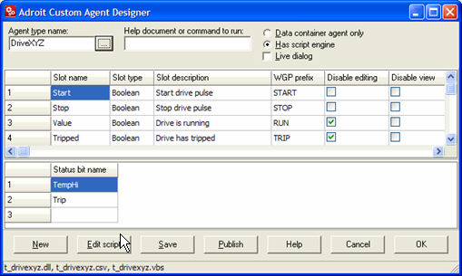

How to Use the Custom Agent Designer
Press the Windows key and start typing in the required application name and select it from the list, in this case:
Custom Agent Designer
To derive a new custom agent:
Note: Click the
New button to empty the current
configuration and start a new agent type configuration.
- In the Agent
type name edit box, type in the name of your agent type e.g. DriveXYZ
and press the TAB key. Alternatively,
use the browse […] button on the
right of this edit box to select a previously configured custom agent.
- In the Help
document or command to run edit box:
- EITHER: type in an optional help document
name or program to run (complete with path names and parameters) when the Help button is pressed in the edit dialog of this agent.
For instance: "c:\windows\Notepad.exe
C:\Program Files\Adroit Technologies\Adroit\DriveXYZHelp.txt".
- OR leave this empty, if you have created a help file with the SAME name as your custom agent, so that Adroit will search for and launch this help file automatically, at run-time when the help is invoked and display nothing if this cannot be found.
- Either select Data
container agent only, if the derived agent is only to contain a
number of values, or Has script engine,
if scripting intelligence is also required, this selection will enable
the Edit script button.
Note: Any derived
Custom agent, containing a Script engine, will require a scan point license.
Tip: Custom agents created via the Custom Agent Designer that require scripting intelligence now provides support for JavaScript (.jav file) or you can choose to use the existing VBScript (.vbs file).
Select the Has script
engine for this DriveXYZ agent.
- Tick the Live
dialog tick box, for changes made to the configuration of this
agent to immediately be updated, without manually using the
Update button, in this dialog,
to do this.
Note: This
can be enabled within the edit dialog.
Leave this unticked for the DriveXYZ agent.
- Configure the first grid
to define the slots (values) of this derived agent. For details, see Slot Configuration Grid.
WARNING! The
custom slot type "String" is a VarString type, which
CANNOT BE SCANNED.
If you need to scan a string slot use the String80
slot type instead, which can be configured for scanning.
-
or
the cell in the Status bit name
column, of the second grid, to define the status bit names, if any, that
this derived agent may require.
 Click here for more details:
Click here for more details:If the Script engine is not enabled these status slots
values need to be driven externally, typically by the scanning subsystem.
Note1: Ensure
that these status bit names are unique and do not clash with any slot
names specified in the first grid.
Duplicate slot names are checked for
and disallowed. Slot names starting with "agent" or "status"
are also checked for and disallowed.
Note2: The
order in which these status bits are defined, determines the order of
the slots, in which they will be displayed in the configuration agent
dialog and which private status bit they will occupy i.e. the
first status bit is StatusBit16. As with other agents, a maximum of 16
status bits may be defined.
Note3: Changing
the number of status slots at a later date will render any WGP files saved
with this agent type unloadable.
If you know what you are doing you can
simply edit the WGP file in a text editor and remove the offending agents.
For the DriveXYZ agent, type in the following status
bits: TempHi and Trip. The "Trip" status bit will be turned
on by the Script engine when the Tripped slot is on, for alarming purposes.
If the Script engine was not enabled, we could have
decided instead that the DriveXYZ Trip status bit would have been scanned
directly to the PLC and done away with the Tripped slot altogether.
- lf scripting intelligence
is also required, click the Edit
script button to create the script code that provide any additional functionality for this
agent and choose the required scripting engine either Yes to use JavaScript or No to use VBScript.
-
Click the Save
button to create the necessary files in the CustomAgents subfolder of
your designated project folder, which is typically C:\ProgramData\Adroit Technologies\Adroit\Configurations\Default\CustomAgents.
The following files can be created for this custom derived agent: t_AgentTypeName.CSV and t_AgentTypeName.DLL files and if the Script
engine is enabled, a t_AgentTypeName.VBS / t_AgentTypeName.JAV file is also created.
t_AgentTypeName.CSV and t_AgentTypeName.DLL files and if the Script
engine is enabled, a t_AgentTypeName.VBS / t_AgentTypeName.JAV file is also created.
For the DriveXYZ agent, the following files will appear in the CustomAgent
sub-folder: t_drivexyz.csv, t_drivexyz.dll and t_drivexyz.vbs / drivexyz.jav, since the
script engine has been enabled.
- Once the slots and status
bits and the script (if scripting was required) have been configured,
for this derived custom agent, the agent can be published or copied to
the Adroit installation folder, typically: C:\Program Files\Adroit Technologies\Adroit. Publish derived custom agents as
follows:
- Stop the Agent Server and any other Adroit components
- Click the Publish button to copy the custom agent
files to the Adroit installation directory on the same PC.
Note: If there
are any remote Adroit installations that connect to the local agent server,
these derived custom agent files must also be MANUALLY copied to those
Adroit installation directories as well.
For the DriveXYZ agent, the following files will be copied
or "published" to the Adroit system folder: t_drivexyz.csv,
t_drivexyz.dll and t_drivexyz.vbs / drivexyz.jav.
When you click the OK,
Save and Edit
script buttons the Custom Agent
Designer ensures that previously published derived custom agents
are up to date with the latest "t_custom.dll", so that any discrepancies
can be fixed.
Similarly, should a published custom agent be found to
be newer than the "t_custom.dll" this will then display an alert
for this to be fixed.
An example of the configured Custom Agent Designer for DriveXYZ:
After the configuration of the slots and status bits, for the DriveXYZ
agent, the Custom Agent Designer
window, should look something like this:

Using
the Derived Custom agent within Adroit : this describes how to add
an instance of a published, derived custom agent and how to test that
it works and how to configure it.